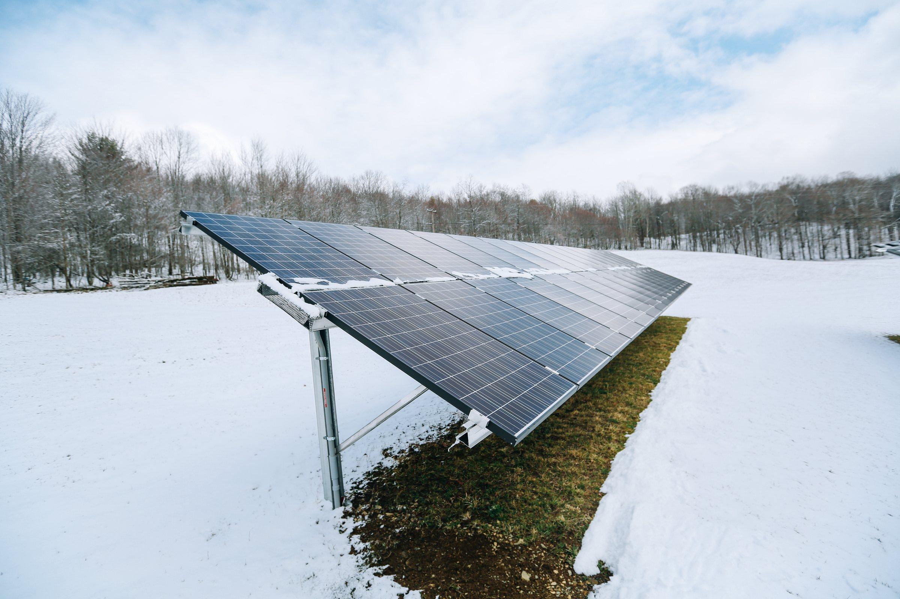
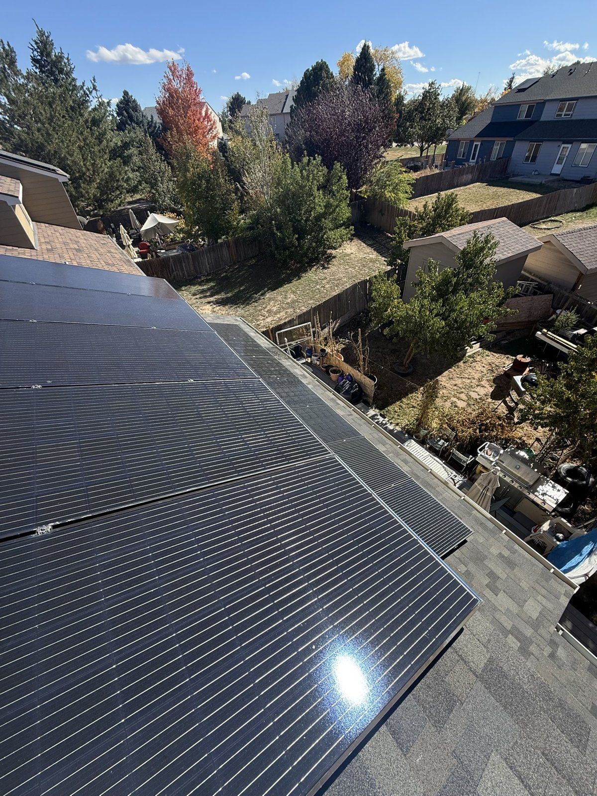

Denver Solar Panel Snow Removal
Solar Panel Snow Removal in Denver
Safe, soft-tool snow clearing for the arrays that actually need it — flat, low-tilt, ground-mounted, and commercial systems. Never forced ice, never metal on glass.
Hero photo: “Solar panels in the snow” by Stephen Yang / The Solutions Project, via Wikimedia Commons, licensed CC BY 2.0.
Let's start with the sentence most snow-removal pages won't print: most Denver homeowners should not pay for routine snow removal from their solar panels.
On a pitched residential roof, your panels are tilted, dark, and smooth. Even weak winter sun warms the glass, a melt layer forms, and the snow blanket usually slides off in sheets within a day or two of the sun coming out — often while the rest of your roof is still white. The production you'd recover with a service call rarely covers the call. We know this because it's our business to know it, and we'd rather tell you the truth than sell you a broom.
We're Jeremy and Meral Runnels, the husband-and-wife team behind Mile High Solar Care. This page exists for the cases where "wait for the sun" is genuinely the wrong answer — because those cases are real, they're the ones we serve, and doing them wrong is how panels get destroyed.
When snow removal actually makes sense
- Flat and low-tilt arrays. Low slope sheds slowly or not at all. A carport, patio-cover, or low-pitch commercial-style roof can hold snow for a week of sunny days while a steep roof next door cleared in hours.
- Ground-mounted systems. No roof heat, no steep slide path — and around places like Fountain, rural Adams and Arapahoe counties, and the edges of the metro, ground mounts are common and downtime is real.
- Commercial arrays. A business's flat rooftop system doesn't get residential advice. Lost production is a line item, and a large array buried after a March storm is money sitting under snow.
- Bonded ice that won't quit. A wet storm followed by a hard freeze bonds snow and ice to the glass. It won't slide — but it also must never be forced (see below). If it's still there after several sunny days, that's a professional look, not a homeowner project.
- Snow still sitting days after your neighbors' arrays cleared. Something about your tilt, shading, or the ice bond needs eyes on it — that's an assessment first, and removal only if it's safe to do.
If none of those sound like your roof, our winter snow guide walks through exactly what's happening up there and the few safe things you can do from the ground. It's the honest version, and it's free.
How we clear snow: soft tools, no force, ever
Module manufacturers — Jinko and LONGi say it in so many words in their maintenance manuals — prohibit most of the obvious ways people attack snow on panels, and damage from improper clearing can void your panel warranty. Our method is built around those rules:
- Soft-surface tools only — foam-head rakes and soft-bristle brushes, the tool classes manufacturers approve. Used from the ground or a stable position wherever possible.
- Loose snow only, gentle pressure. The moment resistance means ice, we stop. Bonded ice releases when the weather turns; forced ice takes glass and cell material with it.
- Never on the glass: metal shovels, ice scrapers, metal-edged rakes, pressure washers, hot water (thermal shock cracks frozen tempered glass), and nobody walking on your panels — in any season.
- Documentation included. Winter visits come with photos of what we found and what we did — the same standard as our inspections — because a winter problem is often a claim file or a warranty conversation later.

The clear-day-zero rule
One situation we get called about every winter: the roof is clear, the sun is out, and the app still says zero. That's almost never a snow problem anymore — think a tripped breaker, an inverter fault, or a string that's down. That's a diagnostic, not a broom, and we'll tell you that straight and what the diagnostic step looks like rather than selling you a clearing you don't need.
Prevention beats removal
The cheapest snow visit is the one you never book:
- Critter guards before winter. Birds and squirrels shelter under arrays hardest in the cold months, and a nest packed under your panels traps moisture and snowmelt against the roof. A guard installed in fall closes that space for good.
- A pre-winter inspection if you took spring hail. Small hail cracks let moisture in; freeze-thaw works water into them all winter and widens them. Damage that's a watch-and-wait in June can be a failing panel by February — caught early, it's documentation; caught late, it's a replacement.
- Care plans with storm checks. Our solar care plans start at $27 a month and include an annual inspection with a written health report — and after major storms, plan members aren't guessing from the driveway about what their array looks like.
Book a winter visit
If your array fits the cases above — flat, low-tilt, ground-mounted, commercial, or snow and ice that won't release — call or text (970) 699-5484 or use the quote form at milehighsolarcare.com. Tell us the roof type, roughly how many panels, and how long the snow has been sitting. We'll confirm scope and price before scheduling, and if the honest answer is "give the sun two more days," you'll hear exactly that.
We serve Denver, Aurora, the full Front Range, and Colorado Springs — including large ground-mount systems for commercial clients, where per-event clearing is quoted by array size and access.
We're Jeremy and Meral. We'll clear what should be cleared, leave what the sun will handle, and tell you the truth either way.
— Jeremy & Meral Runnels, Mile High Solar Care
Related solar services
Denver snow removal questions
Should I pay for snow removal for my home's solar panels in Denver?
Usually, no. On a pitched residential roof, Colorado sun and panel tilt clear most snow within a day or two, and the recovered production rarely covers a service call. Snow removal earns its money on flat, low-tilt, ground-mounted, and commercial arrays — and in the specific problem cases described on this page. Anyone telling every Denver homeowner they need routine removal is selling, not advising.
Can snow damage my solar panels?
The snow itself, almost never — modern modules are load-rated far beyond what Front Range storms deliver. The damage we actually see comes from removal attempts: metal tools, forced ice, hot water, pressure washers, and people walking on panels. The other winter path is old hail damage meeting freeze-thaw, which is an inspection problem, not a snow problem.
My panels are producing nothing two days after the storm. What now?
If they're still covered, it's still weather — give the sun a chance. If the glass is clear and the app shows zero, check your breaker and the inverter's status lights, then call someone. A clear array producing nothing is electrical until proven otherwise.
Will clearing snow void my warranty?
Clearing it wrong can. Manufacturer manuals approve soft brushes and foam tools and prohibit forcing frozen snow and ice off the glass; damage from improper methods is exactly what warranty denials are made of. Our service is built to those manuals — soft tools, loose snow, no force.